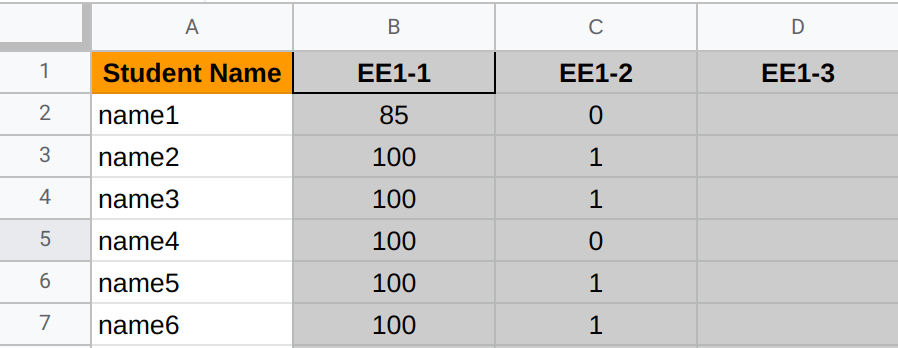
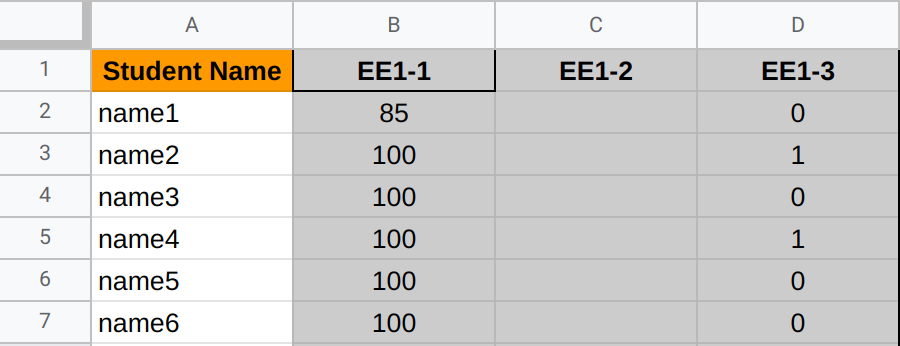

Config Schemas
The examples shown here demonstrate the schemas for configuration read by SheetShuttle. In order for the tool to function with no errors, user written configuration must follow the specified format.
Sheets Schema
Sheets schema describe the format for configuration used to retrieve Google Sheet data.
Defining Objects
There are two main nested object structures used in the Sheets schema.
Region Object
This is the simplest object that does not contain complex nested objects in it. It has the following general structure:
name: <string, required> name of the region to create
start: <string, required> cell to start from (eg. A1)
end: <string, required> cell to end at (eg. H12)
contains_headers: <boolean, required> if selected range contains
headers in the first row
headers: <list of strings, conditional> headers to be used, only
required if contains_headers is false
fill: <boolean, optional> fill the region with `None` if there are missing values.
Defaults to false
types: <string or object, optional> data type to use for the whole region or
for specific columns. Defaults to `string`
Some values in this structure are a bit ambiguous, the following section will provide further explanation on their usage:
contains_headers Explained
In many cases, the region being retrieved already contains the headers to the
data. Set this option to true in order to set the column headers of the
resulting Pandas dataframe equal to the first row of the data.
In the case that the data does not contain headers, another value headers is
required by the schema. It should be a list of strings with the headers of the
data.
NOTE: The length of the headers list must match the number of columns in the data. Otherwise a Pandas error will be thrown.
fill Explained
SheetShuttle attempts to deal with missing data, but many limitations exist. The following screenshot shows a dataset with empty cells. Let's see how SheetShuttle allows you to deal with it.

When retrieved from the Google Sheets API, the data looks as follows:
[
['Student Name', 'EE1-1', 'EE1-2', 'EE1-3'],
['name1', '85', '0'],
['name2', '100', '1'],
['name3', '100', '1'],
['name4', '100', '0'],
['name5', '100', '1'],
['name6', '100', '1']
]
As seen in the sample output, the missing data simply does not show up in the
returned value from the API. By enabling fill, the data is converted to the
following and then a dataframe is created using it.
[
['Student Name', 'EE1-1', 'EE1-2', 'EE1-3'],
['name1', '85', '0', None],
['name2', '100', '1', None],
['name3', '100', '1', None],
['name4', '100', '0', None],
['name5', '100', '1', None],
['name6', '100', '1', None]
]
The same applies to empty rows, where a row full of None is appended in some cases.
Example:
[
['Student Name', 'EE1-1', 'EE1-2', 'EE1-3'],
['name1', '85', '0', None],
['name2', '100', '1', None],
['name3', '100', '1', None],
['name4', '100', '0', None],
['name5', '100', '1', None],
['name6', '100', '1', None],
[None, None, None, None]
]
None will then get converted to Not a Number NaN values in the resulting
Pandas dataframe.
A problem with this approach is the following:
Using a similar example where the missing data is not in the last row/column as seen here:

The resulting data from the API is the following:
[
['Student Name', 'EE1-1', 'EE1-2', 'EE1-3'],
['name1', '85', '', '0'],
['name2', '100', '', '1'],
['name3', '100', '', '0'],
['name4', '100', '', '1'],
['name5', '100', '', '0'],
['name6', '100', '', '0']
]
In this case, the '' will not be replace by None and will stay the same even
when fill is enabled.
IMPORTANT NOTE: If working with numerical data with possibly some missing
fields, you MUST use the float type. This is because int cannot be converted
to NaN by Pandas while float can.
types Explained
By default, all data retrieved from Google Sheets is string. However, in the case that a user would like to work with a variety of data types, they can use this option to set the data type of the pandas dataframe.
The available data types are:
objectstringintfloatbooldatetime
types can be set to any of the items on that list. Additionally, the user can
determine data types for individual columns by doing the following:
types:
col1: int
col2: string
col3: bool
Where the keys are the names of the columns in the data and the value is the data type of that specific column.
Note: using a name of a column that does not exist will throw an error
Examples
With the possible structures in mind, here are a couple of examples of how a region object can look like:
Example 1:
name: grades
start: A1
end: L4
contains_headers: true
Example 2:
name: expenses
start: F5
end: K12
contains_headers: false
headers:
- Jan
- Feb
- Mar
- Apr
- May
- Jun
fill: true
name: expenses
start: A1
end: D6
contains_headers: true
types:
day: string
date: datetime
expense: float
paid: bool
Sheet Object
The sheet object is one level above the region structure and it looks as follow:
name: <string, required> name of sheet to read from in Google Sheets
regions: <list of region object, required> Regions to create from the sheet
Example:
name: sheet1
regions:
- name: grades
start: A1
end: L4
contains_headers: true
- name: expenses
start: F5
end: K12
contains_headers: false
headers:
- Jan
- Feb
- Mar
- Apr
- May
- Jun
Overall Structure
The outermost keys of the configuration must contain only two keys as follows:
source_id: <string, required> ID of sheet to read
sheets: <list of sheet objects, required>
Example:
source_id: my_sheet_id
sheets:
- name: sheet1
regions:
- name: grades
start: A1
end: L4
contains_headers: true
- name: expenses
start: F5
end: K12
contains_headers: false
headers:
- Jan
- Feb
- Mar
- Apr
- May
- Jun
- name: sheet2
regions:
- name: some_data
start: A1
end: Z10
contains_headers: true
JSON Schema Structure:
This is the structure used to validate the configuration using jsonschema:
{
"type": "object",
"properties": {
"source_id": {"type": "string"},
"sheets": {
"type": "array",
"items": {"$ref": "#/$defs/sheet"},
"minItems": 1,
},
},
"required": ["source_id", "sheets"],
"$defs": {
"region": {
"type": "object",
"properties": {
"name": {"type": "string"},
"start": {"type": "string"},
"end": {"type": "string"},
"contains_headers": {"type": "boolean"},
"headers": {
"type": "array",
"items": {"type": "string"},
"minItems": 1,
},
"fill": {"type": "boolean"},
"types": {
"anyOf": [
{
"type": "string",
"enum": [
"object",
"string",
"int",
"float",
"bool",
"datetime",
],
},
{
"type": "object",
"additionalProperties": {
"type": "string",
"enum": [
"object",
"string",
"int",
"float",
"bool",
"datetime",
],
},
},
]
},
},
"required": ["name", "start", "end", "contains_headers"],
"if": {"properties": {"contains_headers": {"const": false}}},
"then": {
"required": ["headers"],
},
},
"sheet": {
"type": "object",
"properties": {
"name": {"type": "string"},
"regions": {
"type": "array",
"items": {"$ref": "#/$defs/region"},
"minItems": 1,
},
},
"required": ["name", "regions"],
},
},
}
GitHub Interactions Schema
This type of schema describes the structure of configurations used to post entries to Github such as issues, pull requests, and files.
Issue Schema
Issue schemas follow a simple one-level structure. The following example shows the structure:
type: <str, required> type of Entry, must equal "issue" (case sensitive)
action: <str, required> action to be executed
("create" -> create a new issue, OR "update" -> add a comment to existing issue)
repo: <str, required> name of repo to create the issue in. Formatted as <org>/<repo_name>
body: <str, required> body of the issue or comment
labels: <List[str], optional> list of labels to add to the issue
# Conditional properties
title: <str, conditional> title of the new issue, required if action is "new"
number: <int, conditional> number of the existing issue,
required if action is "update"
Here are some examples of configuration to create and update issues on GitHub:
Example 1: Create a new issue
type: issue
action: create
repo: example_org/example_user
title: some new issue
body: example body
labels:
- SheetShuttle
- Automated
Example 2: Update issue #12 with a new comment and labels
type: issue
action: update
repo: example_org/example_user
number: 12
body: example body
labels:
- SheetShuttle
- Automated
JSON Schema Structure:
{
"type": "object",
"properties": {
"type": {"type": "string", "const": "issue"},
"action": {"type": "string", "enum": ["create", "update"]},
"repo": {"type": "string", "pattern": r"^.+[^\s]\/[^\s].+$"},
"body": {"type": "string", "minLength": 1},
},
"required": ["type", "action", "repo", "body"],
"if": {"properties": {"action": {"const": "create"}}},
"then": {
"properties": {
"title": {"type": "string", "minLength": 1},
"labels": {
"type": "array",
"items": {"type": "string", "minLength": 1},
"minItems": 1,
},
},
"required": ["title"],
},
"else": {
"properties": {
"number": {"type": "integer"},
"labels": {
"type": "array",
"items": {"type": "string", "minLength": 1},
"minItems": 1,
},
},
"required": ["number"],
},
}
Pull Request Schema
This schema structure is responsible for creating pull requests and updating them with comments. It's very similar to the Issue schema with few exceptions.
type: <str, required> type of Entry, must equal "pull request" (case sensitive)
action: <str, required> action to be executed
("create" -> create a new PR, OR "update" -> add a comment to existing PR)
repo: <str, required> name of repo to create the issue in. Formatted as <org>/<repo_name>
body: <str, required> body of the pull request or comment
# Conditional properties if action is "create"
title: <str, conditional> title of the new issue, required if action is "new"
base: <str,conditional> name of the branch to merge into, required if action is "new"
head: <str,conditional> name of the branch to merge from, required if action is "new"
# Conditional properties if action is "update"
number: <int, conditional> number of the existing pull request,
required if action is "update"
Here are some examples of configuration to create and update issues on GitHub:
Example 1: Create a new pull request
type: pull request
action: create
repo: example_org/example_user
title: some new pull request
body: example body
base: main
head: my_branch
Example 2: Update pull request #5 with a new comment
type: pull request
action: update
repo: example_org/example_user
number: 12
body: example body
JSON Schema Structure:
{
"type": "object",
"properties": {
"type": {"type": "string", "const": "pull request"},
"action": {"type": "string", "enum": ["create", "update"]},
"repo": {"type": "string", "pattern": r"^.+[^\s]\/[^\s].+$"},
"body": {"type": "string", "minLength": 1},
},
"required": ["type", "action", "repo", "body"],
"if": {"properties": {"action": {"const": "create"}}},
"then": {
"properties": {
"title": {"type": "string", "minLength": 1},
"base": {"type": "string", "minLength": 1},
"head": {"type": "string", "minLength": 1},
},
"required": ["title", "base", "head"],
},
"else": {
"properties": {
"number": {"type": "integer"},
},
"required": ["number"],
},
}
File Schema
This schema structure is responsible for creating files and updating
them as well as replacing them entirely. Unlike the issue and pull request
schemas, this one supports 3 actions create, update, and replace.
While update preserves the ordinal content of the file, replace erases the
old content.
type: <str, required> type of Entry, must equal "file" (case sensitive)
action: <str, required> action to be executed
("create" OR "update" OR "replace")
repo: <str, required> name of repo to create the issue in. Formatted as <org>/<repo_name>
path: <str, required> path to the file to be impacted
content: <str, required> content of the file
branch: <str, required> name of the branch that the file exists in
commit_message: <str, optional> the commit message to used when executing the action
Here are some examples of configuration to create, update, and replace files:
Example 1: Create a new markdown file
type: file
action: create
repo: example_org/example_user
path: folder/file.md
content: "# Hello world!"
branch: main
commit_message: add example markdown file
Example 2: Update an existing markdown file
type: file
action: update
repo: example_org/example_user
path: folder/file.md
content: this is an example
branch: main
commit_message: update example markdown file
Example 3: Replace an existing markdown file
type: file
action: replace
repo: example_org/example_user
path: folder/file.md
content: "# Section 1"
branch: main
commit_message: replace example markdown file
JSON Schema Structure:
{
"type": "object",
"properties": {
"type": {"type": "string", "const": "file"},
"action": {"type": "string", "enum": ["create", "update", "replace"]},
"repo": {"type": "string", "pattern": r"^.+[^\s]\/[^\s].+$"},
"path": {"type": "string", "minLength": 1},
"content": {"type": "string", "minLength": 1},
"branch": {"type": "string", "minLength": 1},
"commit_message": {"type": "string", "minLength": 1},
},
"required": ["type", "action", "repo", "path", "content", "branch"],
}